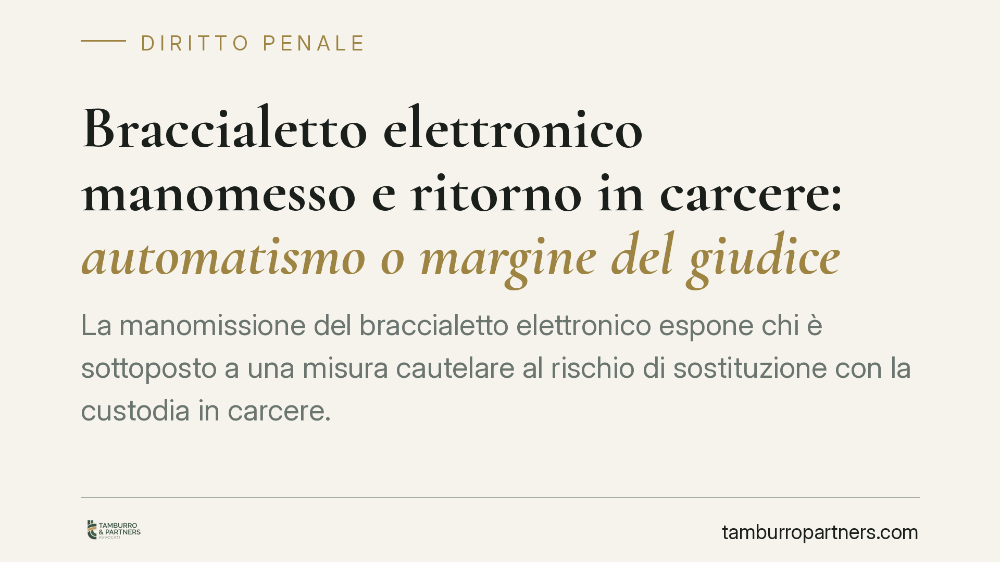

Braccialetto elettronico manomesso e ritorno in carcere: automatismo o margine del giudice?
La manomissione del braccialetto elettronico espone chi è sottoposto a una misura cautelare al rischio di sostituzione con la custodia in carcere. Il nodo giuridico è se tale esito sia automatico o se residui un margine di valutazione per il giudice. La questione tocca da vicino l'art. 276 c.p.p. e la clausola che consente di considerare la lieve entità della condotta.

Una premessa necessaria sulla fonte
Circola la notizia di una pronuncia della Corte Costituzionale che avrebbe dichiarato inammissibili le questioni sull'automatismo del ritorno in carcere in caso di manomissione del braccialetto elettronico, valorizzando la clausola di lieve entità come via interpretativa.
Non siamo in grado di confermare, alla data di redazione, gli estremi esatti di tale decisione (numero e anno). Prima di attribuire a una sentenza un principio di diritto, è indispensabile riscontrarla sulle fonti ufficiali: il sito della Corte Costituzionale e la Gazzetta Ufficiale. Trattiamo quindi il contenuto normativo, che è stabile e verificabile, e segnaliamo il profilo giurisprudenziale come questione aperta, da controllare caso per caso.
Inquadramento normativo
Il cuore della materia è l'art. 276 del codice di procedura penale, dedicato ai provvedimenti in caso di trasgressione alle prescrizioni imposte. Il comma 1-ter disciplina in modo specifico la trasgressione delle prescrizioni inerenti al divieto o all'obbligo di allontanamento dall'abitazione nell'ambito degli arresti domiciliari, prevedendo la sostituzione della misura con la custodia cautelare in carcere.
Questa previsione è costruita in termini apparentemente rigidi, ma il testo contiene una valvola: la sostituzione opera salvo che il fatto sia di lieve entità. È proprio su questa clausola che si gioca la distinzione tra automatismo e margine valutativo. L'esatto tenore della norma va letto nella versione vigente, perché il perimetro della lieve entità è il punto su cui si concentra l'interpretazione.
Il braccialetto elettronico trova la propria base nell'art. 275-bis c.p.p., che consente al giudice di prescrivere procedure di controllo mediante mezzi elettronici. La connessione tra manomissione del dispositivo e trasgressione del divieto di allontanamento non è un dato testuale scontato: è il frutto di un'elaborazione interpretativa, che ricostruisce la condotta di chi sabota il controllo come violazione delle prescrizioni cautelari. Anche questo passaggio va verificato alla luce della giurisprudenza aggiornata, non dato per pacifico.
Implicazioni pratiche
Per chi è sottoposto agli arresti domiciliari con controllo elettronico, il messaggio è duplice.
Da un lato, la rigidità della risposta sanzionatoria è concreta: la trasgressione può condurre alla custodia in carcere. È la situazione affrontata, tra gli altri, in vicende rimesse al vaglio di merito, come quella originata davanti al Tribunale di Napoli, dove si è posto il problema della proporzione tra condotta e conseguenza.
Dall'altro, l'automatismo non è assoluto. La clausola della lieve entità impone al giudice di valutare in concreto la gravità della condotta: un malfunzionamento tecnico, un distacco involontario o un episodio marginale non equivalgono, sul piano valutativo, a una deliberata sottrazione al controllo. La differenza tra questi scenari pesa sull'esito.
Cosa fare in concreto
- Segnalate subito ogni malfunzionamento del dispositivo alle forze dell'ordine o all'ufficio competente, anche con una comunicazione tracciabile.
- Non intervenite sul braccialetto per nessuna ragione: ogni manipolazione, anche a scopo di riparazione, può essere letta come condotta rilevante.
- Documentate le circostanze di un eventuale distacco o anomalia (orario, contesto, testimoni, eventuali guasti tecnici).
- Conservate le ricevute delle segnalazioni effettuate e ogni evidenza utile a dimostrare l'assenza di volontà di eludere il controllo.
- In presenza di un procedimento di sostituzione della misura, assume rilievo un'assistenza tecnica tempestiva, utile a far emergere le circostanze concrete della condotta e l'eventuale lieve entità.
Un punto fermo
Al di là della singola vicenda, resta un principio di fondo: gli automatismi sanzionatori, nel sistema cautelare, convivono quasi sempre con clausole che restituiscono al giudice un margine di apprezzamento. Leggere una norma come interamente automatica, trascurando queste valvole, significa spesso rinunciare a un'argomentazione difensiva fondata. La verifica puntuale del testo vigente e dell'effettiva giurisprudenza resta la precondizione di qualsiasi valutazione.
*Contributo informativo a cura di Tamburro & Partners Avvocati - Avv. Giuseppe Tamburro. Non costituisce parere legale.*
Ogni condominio ha una storia a sé.
Se gestisci un'amministrazione e vuoi un confronto su una specifica questione condominiale, scrivi allo studio. Ti rispondiamo entro un giorno lavorativo.